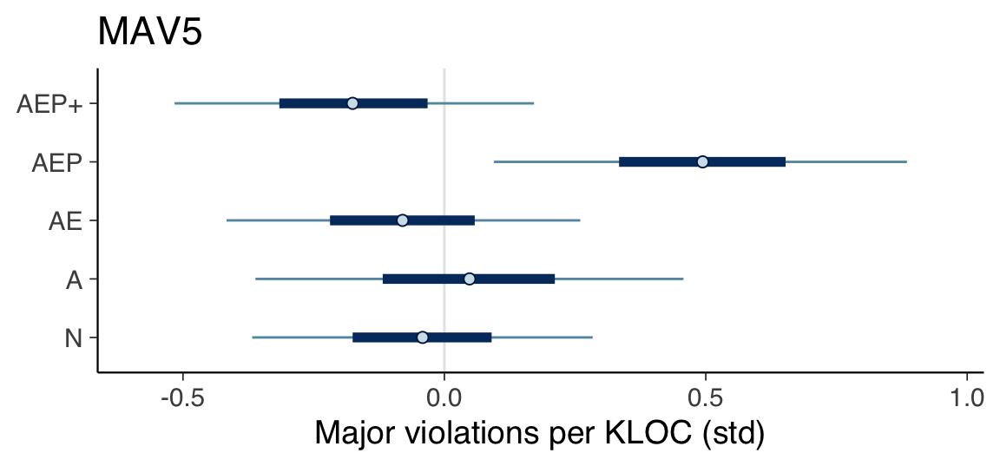
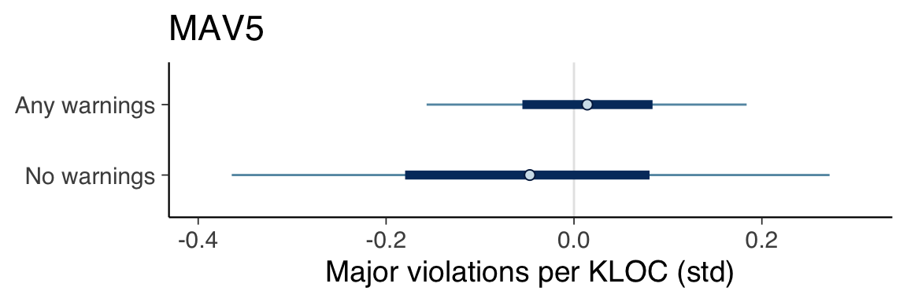
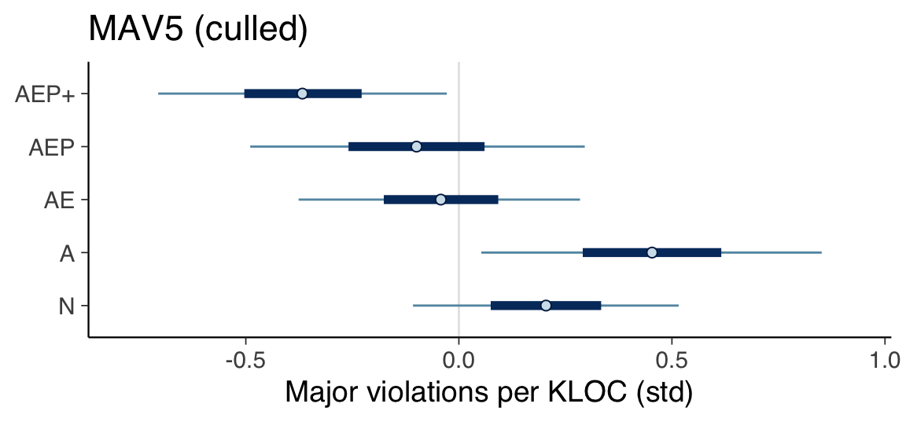
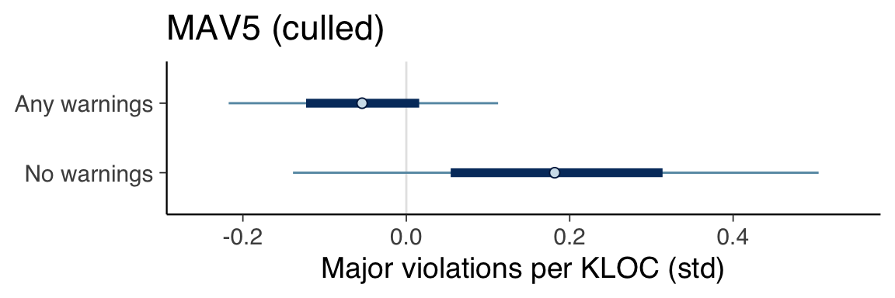

Chapter 8 Major Violations
This is the section on major violations.
8.1 Prepare Data
model_seed <- 20230322
create_major_violations_data <- function(data) {
list(
major_violations_kloc_std=scale(data$major_violations_kloc),
stars_std=scale(data$stars),
contributors_std=scale(data$contributors),
age_std=scale(get_age(data$created_at)),
size_std=scale(data$loc),
files_std=scale(data$files)
)
}
data <- create_major_violations_data(df)
data$category <- factor(df$category)
data_factor_uses_warnings <- create_major_violations_data(df)
data_factor_uses_warnings$category <- factor(uses_warnings(df$category))8.1.1 MAV1
fit_model_mav1 <- function(name, data) {
fit_model(name,
"major_violations_kloc_std ~ 0 + category",
c(
prior(normal(0, 1), class=b),
prior(exponential(1), class=sigma)
),
data,
model_seed)
}
mav1 <- fit_model_mav1("mav1", data)8.1.2 MAV2
fit_model_mav2 <- function(name, data) {
fit_model(name,
"major_violations_kloc_std ~ 0 + category + contributors_std",
c(
prior(normal(0, 1), class=b),
prior(normal(0, 1), class=b, coef="contributors_std"),
prior(exponential(1), class=sigma)
),
data,
model_seed)
}
mav2 <- fit_model_mav2("mav2", data)8.1.3 MAV3
fit_model_mav3 <- function(name, data) {
fit_model(name,
"major_violations_kloc_std ~ 0 + category + stars_std",
c(
prior(normal(0, 1), class=b),
prior(normal(0, 1), class=b, coef="stars_std"),
prior(exponential(1), class=sigma)
),
data,
model_seed)
}
mav3 <- fit_model_mav3("mav3", data)8.1.4 MAV4
fit_model_mav4 <- function(name, data) {
fit_model(name,
"major_violations_kloc_std ~ 0 + category + files_std",
c(
prior(normal(0, 1), class=b),
prior(normal(0, 1), class=b, coef="files_std"),
prior(exponential(1), class=sigma)
),
data,
model_seed)
}
mav4 <- fit_model_mav4("mav4", data)8.1.5 MAV5
fit_model_mav5 <- function(name, data) {
fit_model(name,
"major_violations_kloc_std ~ 0 + category + age_std",
c(
prior(normal(0, 1), class=b),
prior(normal(0, 1), class=b, coef="age_std"),
prior(exponential(1), class=sigma)
),
data,
model_seed)
}
mav5 <- fit_model_mav5("mav5", data)8.1.6 MAV6
fit_model_mav6 <- function(name, data) {
fit_model(name,
"major_violations_kloc_std ~ 0 + category + contributors_std + stars_std",
c(
prior(normal(0, 1), class=b),
prior(normal(0, 1), class=b, coef="contributors_std"),
prior(normal(0, 1), class=b, coef="stars_std"),
prior(exponential(1), class=sigma)
),
data,
model_seed)
}
mav6 <- fit_model_mav6("mav6", data)8.1.7 MAV7
fit_model_mav7 <- function(name, data) {
fit_model(name,
"major_violations_kloc_std ~ 0 + category + contributors_std + age_std",
c(
prior(normal(0, 1), class=b),
prior(normal(0, 1), class=b, coef="contributors_std"),
prior(normal(0, 1), class=b, coef="age_std"),
prior(exponential(1), class=sigma)
),
data,
model_seed)
}
mav7 <- fit_model_mav7("mav7", data)8.1.8 MAV8
fit_model_mav8 <- function(name, data) {
fit_model(name,
"major_violations_kloc_std ~ 0 + category + stars_std + age_std",
c(
prior(normal(0, 1), class=b),
prior(normal(0, 1), class=b, coef="stars_std"),
prior(normal(0, 1), class=b, coef="age_std"),
prior(exponential(1), class=sigma)
),
data,
model_seed)
}
mav8 <- fit_model_mav8("mav8", data)8.2 Compare models
mav1 <- add_criterion(mav1, criterion="loo", moment_match=FALSE)
mav2 <- add_criterion(mav1, criterion="loo", moment_match=FALSE)
mav3 <- add_criterion(mav3, criterion="loo", moment_match=FALSE)
mav4 <- add_criterion(mav4, criterion="loo", moment_match=FALSE)
mav5 <- add_criterion(mav5, criterion="loo", moment_match=FALSE)
mav6 <- add_criterion(mav6, criterion="loo", moment_match=FALSE)
mav7 <- add_criterion(mav7, criterion="loo", moment_match=FALSE)
mav8 <- add_criterion(mav8, criterion="loo", moment_match=FALSE)
print(loo_compare(mav1, mav2, mav3, mav4, mav5, mav6, mav7, mav8, criterion="loo"),
simplify=FALSE)## elpd_diff se_diff elpd_loo se_elpd_loo p_loo se_p_loo looic se_looic
## mav5 0.0 0.0 -205.9 73.1 39.6 37.2 411.7 146.2
## mav3 -0.1 0.3 -205.9 73.2 38.2 35.9 411.9 146.4
## mav8 -0.1 0.9 -206.0 72.2 39.2 36.7 411.9 144.3
## mav4 -0.2 0.7 -206.0 73.6 40.7 38.4 412.1 147.2
## mav7 -1.2 0.5 -207.1 73.4 39.8 37.1 414.2 146.9
## mav1 -2.2 3.3 -208.1 76.4 40.9 38.8 416.1 152.7
## mav2 -2.2 3.3 -208.1 76.4 40.9 38.8 416.1 152.7
## mav6 -3.0 2.1 -208.9 75.1 42.0 39.3 417.8 150.38.3 Determine natural scale values
summary(mav5)## Family: gaussian
## Links: mu = identity; sigma = identity
## Formula: major_violations_kloc_std ~ 0 + category + age_std
## Data: data (Number of observations: 127)
## Draws: 4 chains, each with iter = 10000; warmup = 5000; thin = 1;
## total post-warmup draws = 20000
##
## Population-Level Effects:
## Estimate Est.Error l-95% CI u-95% CI Rhat Bulk_ESS Tail_ESS
## category1 -0.04 0.20 -0.43 0.35 1.00 42354 15421
## category2 0.05 0.25 -0.45 0.53 1.00 44003 14490
## category3 -0.08 0.21 -0.48 0.32 1.00 41600 15539
## category4 -0.05 0.46 -0.93 0.84 1.00 44974 15441
## category5 0.49 0.24 0.02 0.96 1.00 45136 14953
## category6 -0.07 0.34 -0.74 0.61 1.00 47854 15329
## category7 -0.17 0.21 -0.58 0.23 1.00 46308 15481
## category8 -0.03 0.72 -1.44 1.40 1.00 46618 14948
## category9 -0.22 0.72 -1.63 1.21 1.00 47898 13451
## category10 -0.16 0.51 -1.15 0.83 1.00 43052 14203
## category11 -0.05 0.71 -1.41 1.33 1.00 45145 15327
## age_std -0.05 0.10 -0.24 0.14 1.00 36375 16145
##
## Family Specific Parameters:
## Estimate Est.Error l-95% CI u-95% CI Rhat Bulk_ESS Tail_ESS
## sigma 1.02 0.07 0.90 1.16 1.00 36061 15340
##
## Draws were sampled using sampling(NUTS). For each parameter, Bulk_ESS
## and Tail_ESS are effective sample size measures, and Rhat is the potential
## scale reduction factor on split chains (at convergence, Rhat = 1).print(create_natural_scale_summary_df(mav5, df$major_violations_kloc))## Mean SD 0.05 CI 0.95 CI
## N 24.72 37.29 7.42 41.48
## A 29.43 39.91 7.95 50.91
## AE 22.62 37.81 4.80 40.43
## AEP 52.49 39.39 31.53 72.92
## AEP+ 17.90 37.81 -0.43 35.728.4 Intervals of major categories
plot_intervals_of_major_categories(mav5) +
labs(title="MAV5", x="Major violations per KLOC (std)")
8.5 Warnings versus no warnings
mav5_factor_uses_warnings <- fit_model_mav5("mav5_factor_uses_warnings",
data_factor_uses_warnings)
plot_intervals_of_categories(mav5_factor_uses_warnings) +
labs(title="MAV5", x="Major violations per KLOC (std)") +
scale_y_discrete(labels = c(
"b_category1"="No warnings",
"b_category2"="Any warnings"
))
8.6 Without clipp
culled_df <- df
culled_df <- culled_df[culled_df$name != "clipp", ]
culled_data <- create_major_violations_data(culled_df)
culled_data$category <- factor(culled_df$category)
mav5_culled <- fit_model_mav5("mav5_culled", culled_data)summary(mav5_culled)## Family: gaussian
## Links: mu = identity; sigma = identity
## Formula: major_violations_kloc_std ~ 0 + category + age_std
## Data: data (Number of observations: 126)
## Draws: 4 chains, each with iter = 10000; warmup = 5000; thin = 1;
## total post-warmup draws = 20000
##
## Population-Level Effects:
## Estimate Est.Error l-95% CI u-95% CI Rhat Bulk_ESS Tail_ESS
## category1 0.20 0.19 -0.16 0.58 1.00 39939 16039
## category2 0.45 0.24 -0.03 0.93 1.00 45507 15281
## category3 -0.04 0.20 -0.44 0.35 1.00 42167 15424
## category4 0.12 0.45 -0.77 0.99 1.00 44507 14697
## category5 -0.10 0.24 -0.57 0.37 1.00 44025 14970
## category6 0.00 0.33 -0.64 0.65 1.00 41144 15066
## category7 -0.37 0.21 -0.77 0.04 1.00 42398 16197
## category8 -0.05 0.70 -1.43 1.34 1.00 45600 15076
## category9 -0.55 0.70 -1.92 0.81 1.00 43032 14761
## category10 -0.28 0.50 -1.26 0.69 1.00 45305 14731
## category11 -0.03 0.71 -1.40 1.37 1.00 44914 14344
## age_std -0.02 0.09 -0.21 0.16 1.00 36346 16962
##
## Family Specific Parameters:
## Estimate Est.Error l-95% CI u-95% CI Rhat Bulk_ESS Tail_ESS
## sigma 1.00 0.07 0.88 1.14 1.00 37234 15768
##
## Draws were sampled using sampling(NUTS). For each parameter, Bulk_ESS
## and Tail_ESS are effective sample size measures, and Rhat is the potential
## scale reduction factor on split chains (at convergence, Rhat = 1).print(create_natural_scale_summary_df(mav5_culled, culled_df$major_violations_kloc))## Mean SD 0.05 CI 0.95 CI
## N 25.53 25.38 20.64 30.59
## A 29.48 26.17 23.17 35.80
## AE 21.74 25.53 16.38 26.80
## AEP 20.80 26.17 14.64 27.11
## AEP+ 16.53 25.69 11.16 21.90plot_intervals_of_major_categories(mav5_culled) +
labs(title="MAV5 (culled)", x="Major violations per KLOC (std)")
culled_data_factor_uses_warnings <- create_major_violations_data(culled_df)
culled_data_factor_uses_warnings$category <- factor(uses_warnings(culled_df$category))
mav5_culled_data_factor_uses_warnings <- fit_model_mav5(
"mav5_culled_data_factor_uses_warnings",
culled_data_factor_uses_warnings
)
plot_intervals_of_categories(mav5_culled_data_factor_uses_warnings) +
labs(title="MAV5 (culled)", x="Major violations per KLOC (std)") +
scale_y_discrete(labels=c(
"b_category1"="No warnings",
"b_category2"="Any warnings"
))